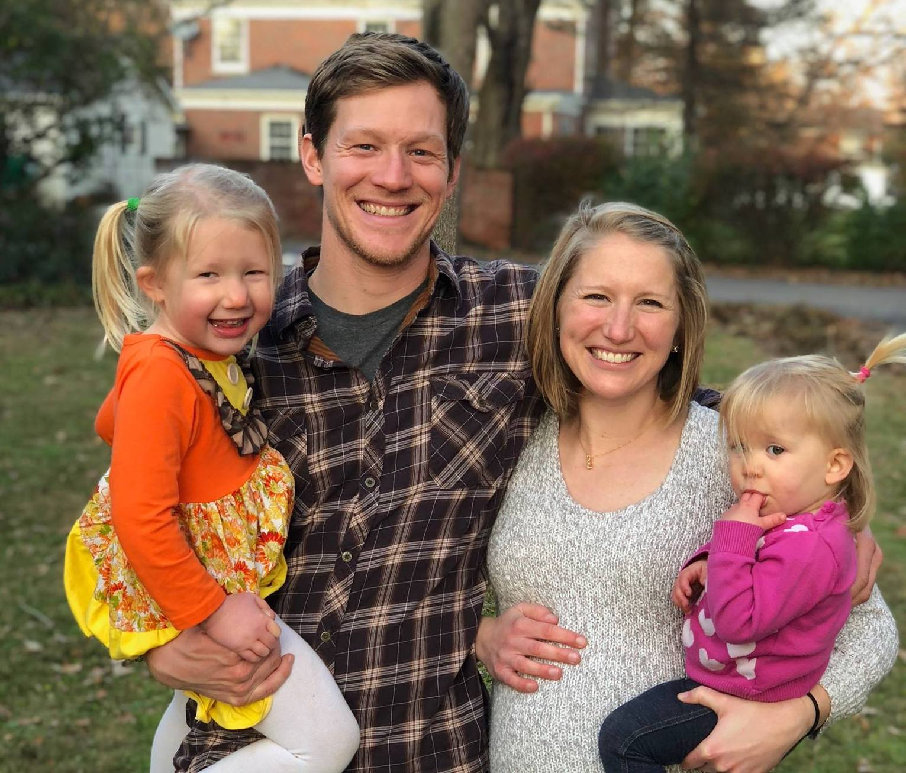

Todd
N.
Trivisonno
About Todd
Todd's Portfolio
Project Logos
Select different translations of the Bible and view them side-by-side.
Todd's Bootcamp Blog
The Overview
My name is Todd Trivisonno.
Each week, I'll be documenting my progress through a web developer bootcamp offered by Awesome Inc. in
Lexington, Kentucky.
After ten years of working full-time in the outdoor recreation industry, I'm excited to be learning a whole
new
skillset. Who knows? Maybe someday I'll be able to combine my experience and passion for the outdoors with
the
tech world.
Prework Week 1
Was your first week what you expected? Why? Why not?
I knew the very first week was going to be a difficult one due to a combination of factors. I was still
working
full-time and in the midst of our busiest season. I learned a great deal in the intro web development class
I
took in the spring, but since that finished in April I had done a grand total of zero coding. I have three
children under the age of 5. And I was (still am?) wrestling with whether I should be quitting my job and
jumping into an intimidating new field.
I felt quite decided about starting the bootcamp, so I was surprised to be feeling hesitant about the first
meetup. A big factor was meeting the other folks joining me in this endeavor. I tried to manage my
expectations, but ultimately I knew what I was looking for in classmates; mainly, people that I could trust
have the same commitment and motivation to excel through this course. After the first meetup, honestly, it
was
a bit hard to tell. Our time was so short together and we hardly had time to talk so I couldn't really get a
sense of people's motivations. I left wishing I knew more, but thankful that I have a great friend committed
to
the class, and telling myself it's just day 1, give it time. I should say now, in hindsight, we are still
very
early in the class but it's evident this is a hardworking group. I'm probably the last person to get their
blog
started! I blame the kids.
Overall, though, the first week did meet my expectations and I'm glad it started semi-light before getting
thrown into the deep-end. I'm also very happy I took the intro course!
What are you struggling with?
From a technical standpoint, I'm feeling okay with the prework week 1 material. I know I'm only using a fraction of what Git can do, but I feel comfortable with the basics and that the basics are really the bulk of Git's function. I struggle with wanting to really dig in and get comfortable with the material, but until the full-time job is wrapped up, it will be tough to find the time.
What are you excited or eager to learn more about?
Call it excited, or moreso nervous, but I see javascript approaching quickly and I'm definitely anticipating it. I struggled quite a bit with it during the intro course, but we didn't have much time. I'm looking forward to really spending more time with it. Also the prospect of writing code to make a game of my choosing has got my inner-child very excited.
Prework Week 2
What are your thoughts on Pseudocoding?
I really like the idea of pseudocoding. In practice, it's more difficult than I would have expected. It's really easy to get into the weeds with every single little detail, which at some point seems to defeat the purpose. But I think with some feedback and continued practice, it will be an essential tool for me in conceptualizing code.
What are you struggling with?
Right now I'd like to spend more time on CSS. I've seen what CSS is capable of and I feel like I'm very far from unlocking it's potential. So far I've really enjoyed styling pages, but then I find myself still struggling with the basic syntax.
What are you excited or eager to learn more about?
Speaking of CSS, I'm eager to do more styling! I enjoy drawing out concepts and I'm looking forward to making more of those drawings a reality.
Prework Week 3
What are your thoughts about the roles HTML, CSS, and Javascript play in the process of rendering content and providing user experience?
The metaphor that has resonated with me the most was what Gary, my Intro to Web Development instructor,
shared
with us concerning HTML, CSS, and Javascript.
He compared HTML to building the foundation and structure of a house. It is the general framework, you can't
have a house without it, but it's also going to be a very plain house if that's all it is.
CSS acts as the accents that can really make a house pop. It can be the basic paint on the walls, but it can
also be highly skilled woodworking or craftsmanship built into all the details. css turns a plain structure
into something much nicer to look at and easier to navigate.
Now you have built a structurally sound house and added much needed character, but as it stands, the house
could be from the 21st century or the 12th century. Addind Javascript to your content is like adding
electricity. Or adding all the fun and useful stuff in your house. It gives power to that nice looking
structure.
Just as a house needs structure, paint, and power, the modern internet user expects a website with well
designed HTML, CSS, and Javascript even if they don't know how it works.
Prework Week 4
What was one thing you liked and disliked about each of the new topics covered in Prework? What was helpful? What hindered your progress? How did you overcome challenges?
We've covered several major topics during Prework, all topics that could easily fill an entire bootcamp on
their own. These are Git, GitHub, HTML, CSS, and Javascript.
Git: At first Git is seemingly formless, and as a person who strongly relies on visuals, it makes it very
difficult to grasp it's structure and flow. Going through this a second time though, helped solidify it's
function a lot more. Having more time to pick Justin and Ian's brains on exactly how and when I should push,
pull, create branches, etc has made a huge difference. Also learning about gitk and visual representations
on
GitHub really helped!
GitHub: I really liked how much we interacted with GitHub during Prework because it gave me the repetitions
to
make it sink in and we spent time working through all the links. I still think GitHub can feel cluttered in
it's visuals, but understanding better all the things it can do helps significantly. Working through the
Mozilla learning modules with the bot was particularly helpful in getting lots of reps.
HTML/CSS: I'll group these two together because my feelings on both are similar. Covering these really felt
like a blur. Thankfully I felt comfortable manipulating these based on experience in the intro course.
Enevitably I still get hung up, but I'm getting better at thinking of the right questions to ask to find a
solution. Something that has resonated with me from the intro class is writing code semantically. Writing
purposeful, organized code has made a huge difference in avoiding creating bigger problems for myself.
Javascript: And then there is Javascript. So much to like, so much that makes me want to bang my head on the
table. I like that you can seemingly do anything with Javascript. I hate that you can seemingly do anything
with Javascript. That's really been my biggest challenge so far, sifting through the many ways to solve a
problem and selecting a path to do so. The HackerRanks have been very helpful for providing manageable sized
problems, and when solved are giving me a much needed confidence boost. The biggest thing I'm working on is
changing my thinking to operate like a computer. Pseudocode, which probably deserves it's own section in
this
blog, has been tremendously helpful in helping me. I was pretty resistent to it at first, and just wanted to
start typing, but I've experienced first hand how big a difference it makes to start with pseducoding first.
In-class Week 1
What did you learn about that helped you understand more about Design?
Apax Software's lead on design, Jacqueline, came and spoke to our class for a little over an hour on
Wednesday.
She introduced to a very simple and effective method for creating and determining good design. Called
inappropriately CRAP design. Or Contrast, Repetition, Alignment, and Proximity.
Contrast refers to the importance of having elements standout by using contrast. Contrast can be used in
fonts,
sizing, texture, color...you name it.
Repetition of colors, patterns, and elements help emphasize the focus of the design. Placing repetitive
elements in the same location is recommended.
Alignment refers to how elements are placed. Having an element just slightly out of alignment can greatly
effect a person's perception of the page. For example using the visual center, where your eye naturally
assumes
the center is, versus the precise geometric center can be much more pleasing to the eye.
Proximity stresses clear communication over 'neat' design. Grouping like elements and paying attention to
the
amount of whitespace between elements can greatly influence a design. Jacqueline recommended grouping
similar
elements, separating unlike ones.
I learned a lot!
What do you want to continue learning about that helps you understand Design better?
I'd really like to spend some more time on colors. Picking out a palette and being effective with using a minimal number of colors. Additionally, I think it would be really beneficial to learn how Jacqueline interacts with clients. Why kind of questions does she ask to end up creating a design that a client will love?
What Design aspects are important to you as a user and as a developer?
Just as in coding, I like purposefully laid out design. I think of design as a first impression, and if it
makes a bad impression, no matter how useful your site might be, folks won't want to spend time there.
Additionally, good design enhances and emphasizes the rest of your work. Good design can be perceived
inherently, and it communicates quality about everything you do.